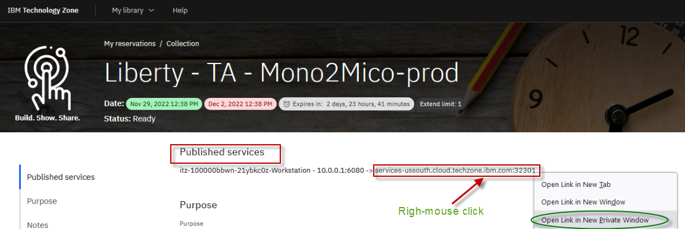
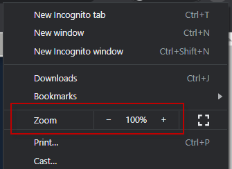

Liberty: Getting Started
Setup the Liberty environment
In the initial setup of Liberty, you will install Liberty using the Archive method. Then, you will create your first Liberty server, start it, and deploy a simple Java EE application to the server to test the Liberty server runtime.
You will use am Ubuntu Linux VM that has been prepared for the Liberty labs and includes the following:
-
The Liberty package has been downloaded to /home/ibmdemo/Downloads directory
-
The IBM JDK has been downloaded to /home/ibmdemo/Downloads directory
-
The required Operating System libraries have been installed.
 |
Information: The Liberty image contains WebSphere Developer Tools for Eclipse. The VMWare image contains the “wdt” folder that contains the WebSphere Developer Tools that is used for the lab. |
TIP: To reduce typing or copy & past of commands, you can find the related code snippets or commands in the VMWare image in the directory:
/home/ibmdemo/Student/lab-files/CodeSnippets/Bootcamp_Lab1_setup_CodeSnippets.txt

Accessing the lab environment
If you are doing this lab as part of an instructor led workshop (virtual or face to face), an environment has already been provisioned for you. The instructor will provide the details for accessing the lab environment.
Otherwise, you will need to reserve an environment for the lab. You can obtain one here. Follow the on-screen instructions for the “Reserve now” option.
https://techzone.ibm.com/my/reservations/create/60da2c20e2cb7a001f656575
The lab environment contains one (1) Linux VM, named Workstation.

The Ubuntu Linux Workstation VM has the following software installed for the lab:
- Application Project with Liberty
- Maven 3.6.0
-
Access the lab environment from your web browser.
A Published Service is configured to provide access to the Workstation VM through the noVNC interface for the lab environment.
a. When the environment is provisioned, right-mouse click on the Published Service link and open the URL in a new private or incognito browser window, as described below:
- If using Google Chrome browser, select "Open link in incognito window" from the context menu.

- If using Firefox browser, select "Open link in new private window" from the context menu.

b. Click on the "vnc.html" link to open the lab environment through the noVNC interface.

c. Click the Connect button

d. Enter the password as: passw0rd. Then click the Send Credentials button to access the lab environment.
Note: That is a numeric zero in passw0rd

-
Login with ibmdemo ID.
a. Click on the “ibmdemo” icon on the Ubuntu screen.

b. When prompted for the password for “ibmdemo” user, enter “passw0rd” as the password:
Password: passw0rd (lowercase with a zero instead of the o)

-
Once you access the Student VM through the published service, you will see the Desktop, which contains all the programs that you will be using (browsers, terminal, etc.)
Tips for working the in lab environment
-
You can use your Browsers zoom in and zoom out options to resize the virtual desktop to fit your screen.
The examples below are using Firefox and Chrome browsers.
- Firefox example:

- Chrome example:

-
You can copy / paste text from the lab guide into the lab environment using the clipboard in the noVNC viewer.
a. Copy the text from the lab guide that you want to paste into the lab environment
b. Click the Clipboard icon and paste the text into the noVNC clipboard

c. Paste the tect into the VM, such as to a terminal window, browser window, etc.
d. Click on the clipboard icon agian to close the clipboard
NOTE: Sometimes pasting into a Terminal window in the VM does not work consistently. In this case you might try again, or paste the text into a Text Editor in the VM, and then paste it into the Terminal window in the VM.
-
An alternative to using the noVNC Copy / Paste option, you may considr openeing the lab guide in a web browser inside of the VM. Using this method, you can easily copy / paste text from the lab guide wihout having to use the noVNC clipboard.
|
Important: Click CANCEL…. If, at any time during the lab, you get a pop-up asking to install updated software onto the Ubuntu VM. The one we experience is an update available for VS Code. CLICK CANCEL!
|

Extract the extended Liberty vPoT image
Locate the script on the desktop and double-click on it to run in terminal

Wait until the image has been extracted. Once completed, press Enter to continue:

The Liberty vPOT contents are extracted to /home/ibmdemo/Student/WLP_21.0.0.3, and is referred as {LAB_HOME} throughout the labs.
|
Information: If you need to reset the image at some point of time, make sure that all programs are stopped and run the script again. This will clean-up the directory /home/ibmdemo/Student/WLP_* and extract the image again. |
Install WebSphere Liberty
For your convenience, Liberty has already been installed into the directory /home/ibmdemo/Student/WLP_21.0.0.3/wlp.
However, in this section, you will install a new instance of Liberty to learn how easy and fast it is to install Liberty, using the archive installation method.
Liberty can be installed via IBM Installation Manager, but the more convenient way is to use an Archive Install.
The related packages can be downloaded from Passport Advantage, but the most recent versions are only available on the IBM Support pages. There are separate packages available for the Liberty edition and for the IBM Java SDK. Liberty for Developers downloads and documentation is located here:
https://www.ibm.com/support/pages/node/6250961#asset/
In this section we will use these two packages, which are Java JDK v8 and Liberty ND edition.
-
IBM Java SDK for WebSphere: ibm-java-sdk-8.0-6.26-linux-x86_64.tgz
-
IBM WebSphere Liberty ND Archive Install: wlp-nd-all-21.0.0.3.jar
To install Liberty using the Archive method, perform the following steps:
-
Open a Terminal window by clicking on the appropriate icon:
-
Navigate to the “Student” directory:
cd /home/ibmdemo/Student -
Create a temporary directory and navigate to that directory
mkdir temp cd temp -
Extract the IBM Java SDK to the ~/Student/temp/directory. This will extract the JDK to the directory ibm-java-x86_64-80
tar -zxvf '/home/ibmdemo/Downloads/ibm-java-sdk-8.0-6.26-linux-x86_64.tgz' -
Extract the WebSphere Liberty ND package to the ~/Student/temp directory.
The Liberty Archive is a Java “jar” file. To extract the archive, use the java -jar command.
ibm-java-x86_64-80/bin/java -jar '/home/ibmdemo/Downloads/wlp-nd-all-21.0.0.3.jar' --acceptLicense .-
The --acceptLicense option is included to automatically accept the license, without having additional prompts.
-
The dot at the end of the command means to extract the archive to the current directory.
-
The Liberty archive is extracted, and Liberty is now installed in the wlp subdirectory.
-
-
List the two directories that were created via the extraction of the Java JDK and Liberty ND
ls
-
Liberty is now installed the wlp directory.
-
IBK JDK is now installed in the ibm-java-x86_64-80 directory
-
-
Set the JAVA_HOME path to tell Liberty to use the Java SDK that you just extracted
export JAVA_HOME=~/Student/temp/ibm-java-x86_64-80/jre/ -
Display the product information for Liberty
a. Display the Liberty product edition and version
wlp/bin/productInfo versionThe output should indicate the Liberty Edition is ND, and the product version should match the Liberty Archive that is used in the lab.
Liberty fixpacks are delivered on a four-week continues delivery interval.
-
The Version indicates the YEAR and MONTH of the Liberty fixpack installed.
-
21.0.0.3 is the 3rd fixpack in 2021
b. Display the list of installed features
wlp/bin/productInfo featureInfoThe output should look similar to the illustration below, which includes all of the Liberty ND features. The screen shot is only a partial list of installed features of Liberty ND.
c. You have just installed Liberty in the temp directory using the archive install method.
It’s that simple to install Liberty. Creating and working with a new Liberty server is equally simple. You will do that in the next sections of the lab.
There are more than 200 features installed via the Liberty ND package. By default, you would start with a much more light-weight package. If you are interested to see which features belong to which Liberty Edition, please look here:
https://www.ibm.com/docs/en/was-liberty/nd?topic=management-liberty-features
-
|
Information: As mentioned before, Liberty has already been installed into the directory /home/ibmdemo/Student/WLP_21.0.0.3*/wlp. We will NOT use the Liberty installed in the temp directory in the next sections of the lab. You can ignore the temp directory. |
- Close the Terminal window.
INFORMATION ONLY – Open Liberty
How does Open Liberty fit into the Liberty family of editions?
Open Liberty is the lightweight open source server runtime that can be ideal for building Java microservices and cloud-native apps.

Open Liberty provides a proven open source foundation for the WebSphere Liberty portfolio. All of the editions of Liberty are built on top of the same code base from Open Liberty.
-
Liberty Core offers supported Web Profile
-
Liberty Base offers supported Full Profile
-
Liberty ND offers supported Full Profile and clustering / workload management capabilities
All 3 commercial editions provide additional capabilities:
-
Programming model extensions
-
Production quality of service extensions
-
Security extensions
And IBM’s full support

INFORMATION ONLY – Open Liberty Downloads, Docker, and Devops
How do you get Open Liberty?
Open Liberty can be obtained via zip file downloads, or through Maven, Gradle, and Docker.
Visit https://openliberty.io/downloads/ to find the latest Open Liberty releases and builds.
Open Liberty Zip File Download packages are available here: https://openliberty.io/downloads/#runtime_releases
Below are examples of getting Open Liberty using Maven, Gradle, and Docker.


Create test server
-
Open a Terminal window by clicking on the appropriate icon:
-
Navigate to the Liberty runtime installation directory {LAB_HOME}/wlp/bin
cd /home/ibmdemo/Student/WLP_21.0.0.3/wlp -
Run the following command to create a new server named “myServer”
bin/server create myServerThe server command supports actions for starting, stopping, creating, packaging, and dumping a Liberty server.
The server create command creates a new Liberty server with the name specified.
Additional detail on the server command can be found here:
https://www.ibm.com/docs/en/was-liberty/base?topic=line-server-command-options
-
The new server is created in the following directory:
/home/ibmdemo/Student/WLP_21.0.0.3/wlp/usr/servers/myServer
-
The server.xml file is the complete default server configuration. Open an editor to view the server configuration file. Ensure you are in the correct directory before opening the server.xml file.
cd /home/ibmdemo/Student/WLP_21.0.0.3/wlp gedit usr/servers/myServer/server.xml
The server.xml defines a minimal configuration needed to start a Liberty server.
In this example, it includes only the JSP feature, and defines the HTTP and HTTPS endpoints that the server is listening for incoming HTTP(S) requests.
-
Close the gedit editor.
-
Start the server instance using the server start command:
bin/server start myServerThis runs the server in the background and the output is written to files in the {LAB_HOME}/wlp/usr/servers/myServer/logs directory.
Alternatively, to start the server in the foreground (so the console messages are seen in the command window) you can use the command “bin/server run myServer”
-
View the Liberty server’s messages.log file to see the server startup messages
cat usr/servers/myServer/logs/messages.logThe server is started when the message “The myServer server is ready to run a smarter planet” is displayed in the messages.log file.

-
Stop the server with the server stop command:
bin/server stop myServer -
Having verified the Liberty installation, you can delete the test server “myServer” simply be removing its directory.
Delete the server by deleting the {LAB_HOME}/wlp/usr/servers/myServer directory.
rm -rf usr/servers/myServerYou now have a Liberty runtime environment that is ready to create servers to run applications.
Short recap of what you just did
In the previous step, you deleted a Liberty server configuration. You did NOT delete the Liberty installation and its binaries.
This is an important concept of Liberty. The Liberty Runtime binaries are separate from the Liberty Server configurations.
-
Liberty was installed in \~/Student/WLP_21.0.0.3/wlp
-
By default, the Liberty Server configurations are in ~/Student/WLP_21.0.0.3/wlp/usr/
The Server configuration directory can be located anywhere, including outside of the default location of /wlp/usr.
The Server configuration location can be over-ridden using the Liberty bult-in variable “${wlp.user.dir}”.
In fact, this concept is instrumental in Liberty providing zero migration for unchanged apps while keeping current with Liberty Fixpacks, as illustrated below.
-
Just install a new Liberty Fixpack (Archive install)
-
Update the WLP_USER_DIR variable to point to your existing server configurations location.

Test the WebSphere Developer Tools (WDT)
You can manage Liberty from the command line and edit the server configuration files using your favorite editor.
However, the WebSphere Developer Tools (WDT) provide a great configuration editor, server controls and application publishing, as well as many other time-saving utilities. In this section, you will explore using WDT with Liberty.
Normally, you would first download and install Eclipse, followed by the installation of WDT Eclipse plugin.
For this lab, we have bundled everything into a single zip file. The directory {LAB_HOME}/wdt contains a prebuilt and expanded WDT.
|
Information: Upon first startup, it may take Eclipse up to a minute to start as it initializes. |
-
Launch Eclipse
a. Use the File Explorer to navigate to the directory:
Home > Student > WLP_21.0.0.3 > wdt > eclipse
b. Double-click on the eclipse executable to start Eclipse.

c. When the Eclipse launcher prompts you to select a workspace, enter the following directory. Then click the Launch button.
/home/ibmdemo/Student/WLP_21.0.0.3/workspace
d. Close the welcome page by clicking on the ‘X’ icon.

Create Liberty Server in WDT
Previously in the lab, you used the command line to create and start a Liberty server.
Developers often work in an integrated development environments such as Eclipse, VS Code, or Intelij, to name a few, to enhance their productivity.
IBM WebSphere Developer Tools for Eclipse enhances developer productivity by providing a lightweight set of tools that you can use to develop, assemble, and deploy Java EE, OSGi and mobile applications to WebSphere Application Server traditional and Liberty.
In this section, you will use the WebSphere Developer Tools with the Eclipse IDE to work with Liberty.
First, create a Liberty server using the integrated tools.
-
At the bottom of the Eclipse workbench, open the Servers view by clicking the Servers tab.
-
Right-click within the windows of the Servers view and select New > Server
-
Under the server type list, expand IBM and select the Liberty Server type.

-
Use the default eclipse server name as supplied (localhost).
a. Click Next.
This creates the liberty server object in eclipse, and the Liberty Runtime Environment page is displayed.
-
Now eclipse needs to associate the ‘localhost’ server with a server configuration in a Liberty runtime (the runtime that you installed previously in the lab).
a. In the Path field under the “Choose an existing installation” section, type or browse for the directory where you installed the Liberty runtime environment shown below:
/home/ibmdemo/Student/WLP_21.0.0.3/wlp
b. Click Next. to continue
-
To create the server configuration in the runtime, replace in the Server name field with labServer. Then click Finish.

-
The new server will appear in the Servers view. You can expand the server to show a quick view of the configuration.
-
Open the server configuration editor by double-clicking on Server Configuration (server.xml):
-
The Server configuration view is displayed. The default view is “Design” mode, which provides an intuitive server configuration editor UI.
a. Click on the “Design” view tab if it is not already selected.
b. You can click on the Source” view tab to edit the server.xml source directly.

Cleanup
-
Close the server.xml editor
-
Exit Eclipse by selecting using the File > Exit from the Eclipse main menu.
-
Close any open Terminal windows
=== END OF LAB ===